FLIGHT400 IBM i Modernization Lab
A hands-on lab where you'll use IBM Bob AI to explain, modernize, optimize, and extend a real legacy IBM i application — no deep mainframe experience required.
First time here? Start with Part 0 — Environment Setup. Complete all five setup steps before attempting any exercise. Click it in the left sidebar.
What You'll Build Today
Environment & Connections
Architecture Docs & ERD
OPM → ILE RPG Modernization
Add a Field End-to-End
Database Query Optimization
Natural Language System Queries
RPGUnit Test Suite
React Carbon App from Green Screen
Before You Begin — Prerequisites
IBM Bob IDE installed on your laptop
You should have received an invitation email to join your team's Bob account.
Internet access
IBM i TechZone LPAR credentials
Your instructor will provide the host IP, user profile, and private key.
IBM Bob Premium Package for i
Pre-installed for most Bobathon teams — you'll verify this in Setup Step 2.
Environment Setup
Complete all five steps before starting any exercise. Don't skip steps — later exercises depend on this setup being correct.
Instructors: Complete your instructor setup separately before participants arrive. See the Instructor Setup README for details.
🔢 Enter Your Assigned Student Number
Your instructor will tell you your number (1–50). Enter it below and your library name and port will appear everywhere in this guide.
Step 1 Bob Setup
Create your IBM ID
Open the "You've been invited to join your team" email you received and click the link to create your IBM ID. This gives you access to IBM Bob.
Download & open Bob
Download Bob using the correct installer for your computer and open it. If Bob asks whether to import settings from another editor, click your regular IDE or Skip for now. If it asks about chat migration, click Skip migration.
Log in to Bob
In the Bob chat window, click Log in to Bob. When asked to allow Bob to sign in, click Allow. Bob will ask if you want to open a link — click Open. This opens your browser to complete sign-in.
Verify you're on the correct team
Click the gear icon above the Bob chat window → General → Team selector. Make sure it shows a team with Bobathon in the name. If not, click and select the correct account.
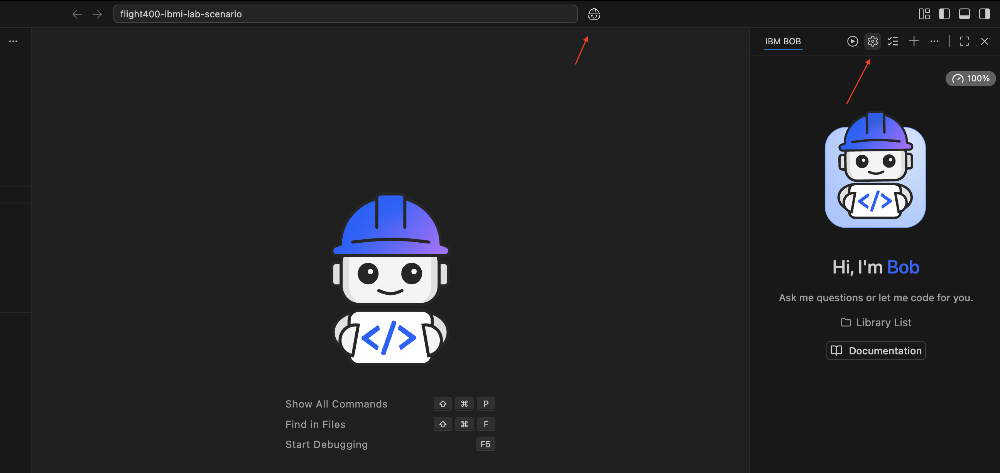
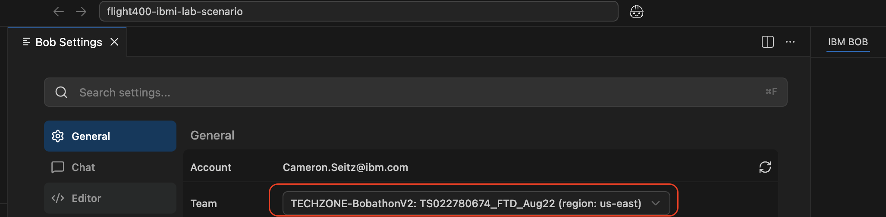
Step 2 Extensions
Open the Extensions view with Cmd+Shift+X (macOS) or Ctrl+Shift+X (Windows/Linux).
Verify IBM Bob Premium Package for i
Search for "IBM Bob Premium". If it appears under Installed — you're done with this step. If not, click Install. This package includes Code for IBM i (source editing, Object Browser, IFS Browser, Db2 for i, and more).
Confirm it is activated in Bob
In the Bob Activity sidebar, open Bob extension settings and verify IBM Bob Premium Package for i is activated. If you just installed it, reload Bob when prompted first. Activation unlocks the IBM i Developer and IBM i Database modes.
Install IBM i Development Pack
Search for "IBM i Development Pack" in Extensions. This is not pre-installed — click Install if it doesn't appear under Installed. Reload Bob if prompted.
Step 3 Your Library
Each participant has their own copy of FLIGHT400 in a dedicated library. Use only your assigned number throughout all exercises.
| # | Library | Dev Port | React App URL |
|---|
The Dev Port is only needed for Exercise 7. When Bob asks you to pin Vite to a port, use the value from your row.
Step 4 Connect Bob to IBM i
Open the IBM i panel
Click the IBM i icon in the left Activity Bar of Bob.
Add a new connection
Click New Connection and enter the host IP, user profile, and ssh_private_key provided by your instructor. Do not use the password — use only the ssh_private_key.
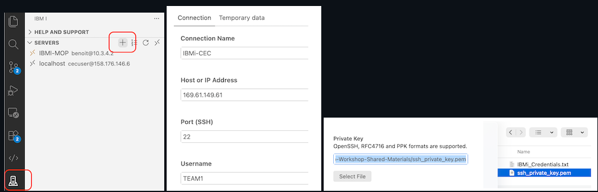
Add your library to the User Library List
In Code for IBM i, go to User Library List → click the + icon → type FLGHT4nn (replace nn with your number) → press Enter.
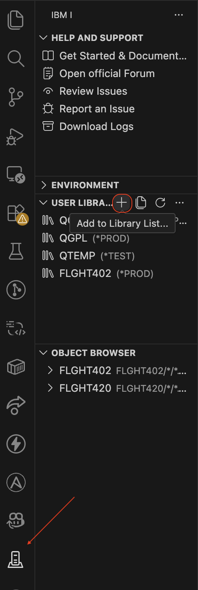
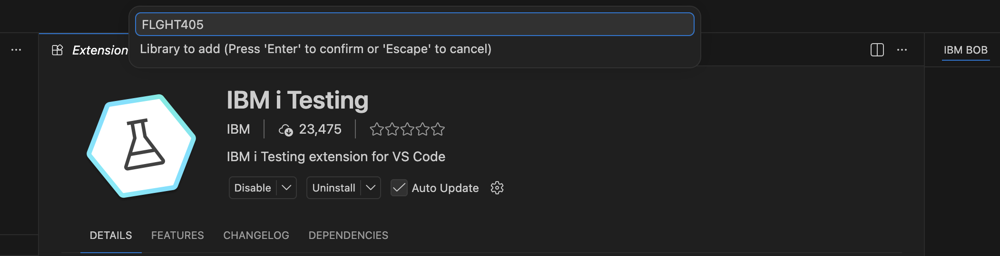
Add your library to the Object Browser
Go to Object Browser → click the funnel icon → Create new filter. Set Libraries to FLGHT4nn, Object types to *ALL. Click Save Settings.
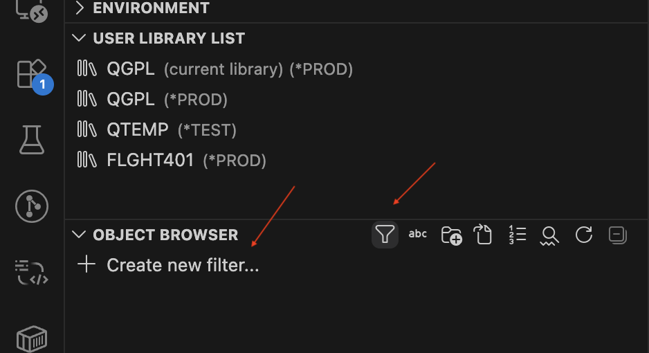
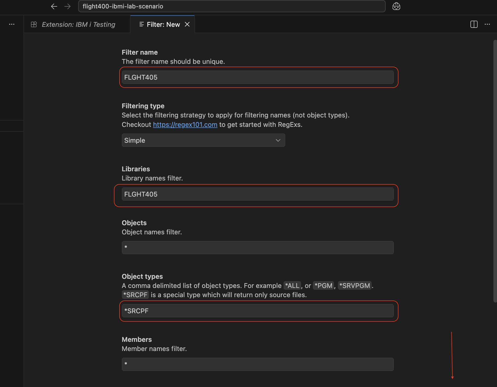
Set the workspace to Library List
Click the + icon above the Bob chat window. Make sure your library is listed under New Task in Library List and select that option.
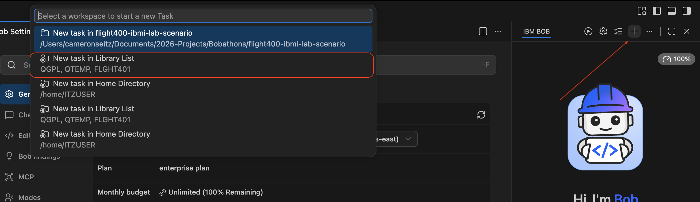
Step 5 SSH Tunnel
Required for the green screen and Exercise 7. Your instructor provides the host IP, user profile, and password.
Download the private key & set permissions
chmod 600 ssh_private_key.pem
Open the SSH tunnel
Replace <myuser>@<myIPaddress> with your TechZone values. On macOS/Linux you may need sudo ssh; on Windows remove sudo and run as Administrator.
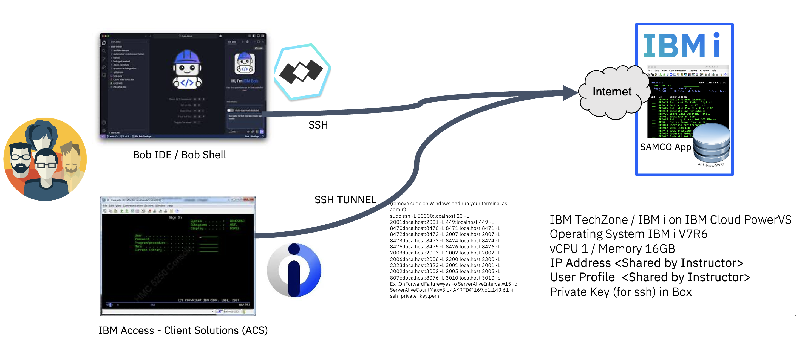
sudo ssh -L 50000:localhost:23 -L 2001:localhost:2001 -L 449:localhost:449 \ -L 8470:localhost:8470 -L 8471:localhost:8471 -L 8472:localhost:8472 \ -L 2007:localhost:2007 -L 8473:localhost:8473 -L 8474:localhost:8474 \ -L 8475:localhost:8475 -L 8476:localhost:8476 -L 2003:localhost:2003 \ -L 2002:localhost:2002 -L 2006:localhost:2006 -L 2300:localhost:2300 \ -L 2323:localhost:2323 -L 2005:localhost:2005 -L 8076:localhost:8076 \ -L 3001:localhost:3001 -L 3002:localhost:3002 ... -L 3050:localhost:3050 \ -o ExitOnForwardFailure=yes -o ServerAliveInterval=15 -o ServerAliveCountMax=3 \ <myuser>@<myIPaddress> -i ssh_private_key.pem
The full tunnel command includes ports 3001–3050 for React apps. Your instructor will provide the complete command or you can copy it from the README.
(Optional) Connect IBM i Access Client Solutions for 5250
Only needed if you want to view the green screen. Install IBM i Access Client Solutions, set IP Address to 127.0.0.1, port to 50000. Log in, then:
ADDLIBLE FLGHT4nn CALL FLGHT4nn/FRS021
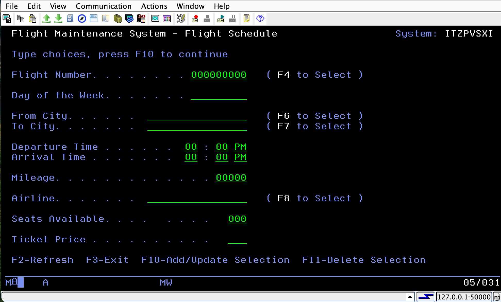
When finished in the 5250 screen, always exit by pressing F3.
Setup complete! You are now ready to start Exercise 1. Use the button below or click the exercise in the sidebar.
Code Explanation & Architecture Documentation
Use Bob's IBM i Developer mode to auto-generate an architecture overview with Mermaid diagrams, then switch to Database mode to produce an Entity Relationship Diagram.
1a Browse the Object Browser
Expand User Library List and Object Browser
In the IBM i sidebar, expand both panels. If you haven't added a filter for FLGHT4nn yet, do it now with Object types set to *ALL.
Browse source programs
Expand Source Files and open a few programs from QRPGSRC to get a feel for the classic fixed-format RPG style.
Preview a display file
Navigate to QDDSSRCD and open FRS001DF. Click Preview All on the first line to see the green-screen layout rendered visually.
Try previewing FRS021DF too — this is the Flight Maintenance screen used in Exercise 3.
Check program age
In the Object Browser, click FRS000.pgm — the flight reservation logon. Check its Detail: it was compiled in 1997, over 30 years ago!
1b Generate Architecture Overview
Switch to IBM i Developer mode
Click the + (Scope) button and select (QSYS) Library List as the context scope. Confirm FLGHT4nn is in the library list.
Send this prompt to Bob
Replace 4nn with your number:
Review the output
Bob analyzes programs, source members, and database files and returns a structured Markdown document. Notice how it identifies the menu-driven architecture, core transaction programs, and the underlying database schema.
Copy the output to a new file FLGHT4nn-Architecture.md in your workspace for reference.
1c Generate ERD
Switch to IBM i Database mode
Use the mode selector at the bottom of the Bob chat panel.
Run the /erd command
Type /erd first so it highlights in Bob chat, then replace 4nn with your number:
Review the Mermaid ERD
Bob introspects FLIGHTS, ORDERS, CUSTOMERS, AGENTS, etc. Key relationships: ORDERS links to FLIGHTS, CUSTOMERS, and AGENTS. Copy it to your architecture document.
1d Optional
Draw.io Diagram
Install the Draw.io Integration extension first: Cmd+Shift+X → search "Draw.io Integration" → Install.
FLGHT4nn-architecture.drawio in $HOME/docs/ on IBM i."In the IFS Browser, navigate to $HOME/docs/ and click the .drawio file — the Draw.io extension renders it directly in the editor.
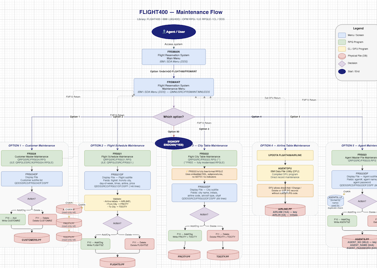
1e Optional
Business Rules Extraction
Drill down on a specific member using the Business Rules Extraction workflow. Click the workflow icon at the top of the Bob panel, choose to run the workflow in your library list, and select Business Rules Extraction.
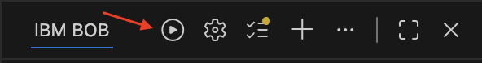
| Option | Value |
|---|---|
| Library | FLGHT4nn |
| Source File | QRPGLESRC |
| Member | FRS401.RPGLE |
Specify an output path unique to your library number, e.g. /home/ITZUSER/flght4nn/docs/business-rules/FRS401-report.md.
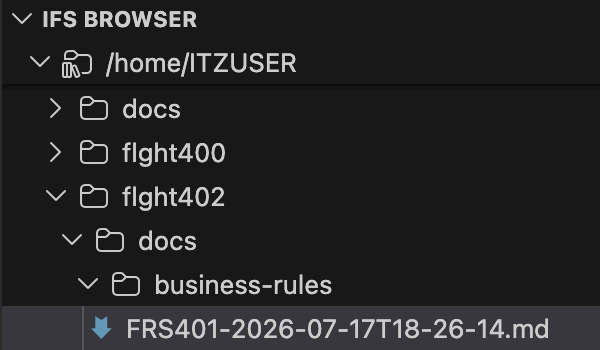
You now have a living architecture document generated entirely from the legacy codebase — no manual reverse-engineering required!
Program-Level Explanation & Modernization
Understand an old OPM RPG program, then modernize it to free-format ILE RPG using Bob's built-in modernization workflow.
2a Understand FRS409
Switch to IBM i Developer mode
Open FRS409
In the Object Browser, navigate to FLGHT4nn/QRPGSRC and open FRS409.
Ask Bob to explain it
Bob will explain that FRS409 is the Order Modification Confirmation Window — an OPM RPG program that displays a confirmation popup when a user modifies an order. It handles F3 (Exit), F12 (Cancel), and Enter via a DOUEQ loop with CASEQ dispatch subroutines.
2b Modernize FRS409
Ask Bob to modernize
With FRS409 still open in the editor:
Start the workflow
Bob recognizes the fixed-format OPM RPG and offers to run the RPG Modernization (Fixed to Free Format) workflow. Choose Start workflow.
Fill in the workflow form
| Field | Value |
|---|---|
| Source file | FLGHT4nn/QRPGSRC |
| Source member | FRS409 (Bob pre-fills from open editor) |
Accept the other defaults and click Analyze Member. Bob spins up a subagent to convert fixed-format RPG to modern free-format ILE RPG, then runs a CRTBNDRPG compile. Watch the output in the terminal panel.
Confirm output location
When Bob prompts "Confirm Output Member Location", ensure the path contains your library number and approve. Bob places the modernized source at FLGHT4nn/QRPGLESRC/FRS409.RPGLE.
2c Review the Summary
Bob automatically generates a Modernization Summary Report in the chat including:
- What was changed and why
- Lines of code before vs. after
- Opcode-by-opcode conversion notes
- Compilation result
At the bottom of the Bob chat panel, click the File Changed item to see the diff for FRS409.RPGLE. In the Object Browser, right-click FRS409.PGM → Detail to check the new compile timestamp.
Field Expansion: Add Total Flight Hours
Use Bob to plan then implement a new business field — Total Flight Hours — from the physical file all the way to the 5250 screen.
Before you begin: Switch to IBM i Developer mode, set scope to Library List (QSYS), and confirm FLGHT4nn is on the library list. You stay in Developer mode for the whole exercise.
Field Spec at a Glance
| Layer | Field Name | Definition |
|---|---|---|
| Database (PF) | FLHRS | 4P 0 (packed, 4 digits, 0 decimals) |
| Logical / RPG | FHRS | RENAME(FLHRS) |
| Screen (DDS) | SFLHRS | 4/0, input/output, after Mileage |
3a Create a Custom Rule
Open Bob settings
Click the settings icon at the top right of the Bob panel.
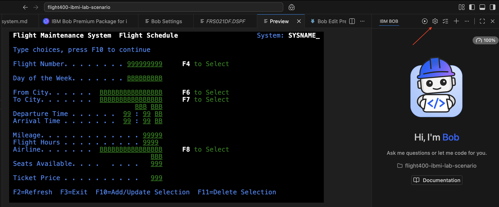
Navigate to IBM i Developer mode
Click Modes on the left sidebar → select IBM i Developer.
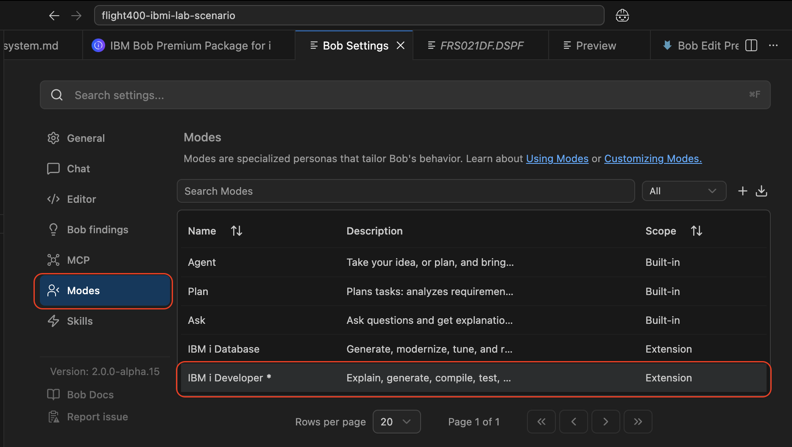
Open the mode editor
Click the pencil (edit) icon in the top right.
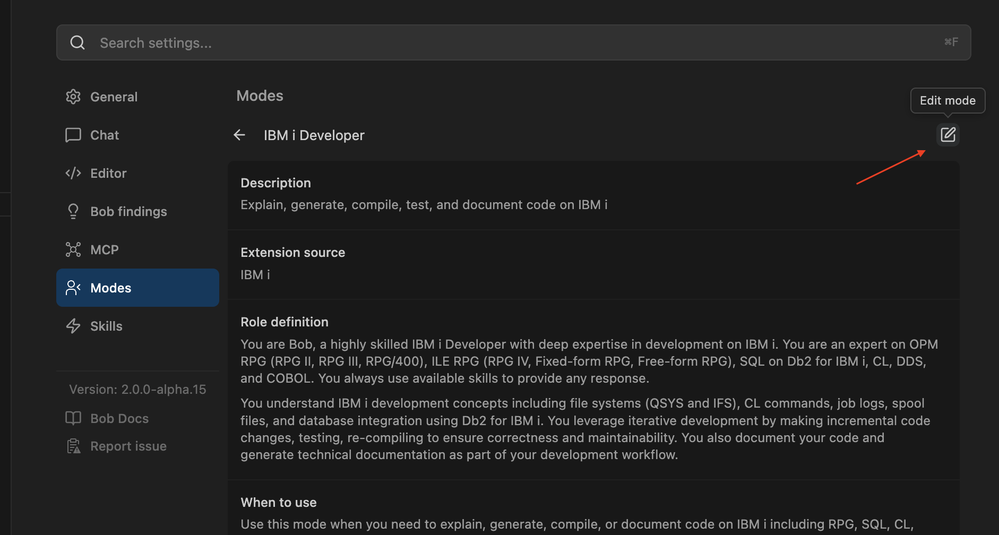
Add custom instructions
Scroll to the Custom Instructions section and add the following text, then click Save:
## When a user asks to plan or implement code changes - Make insert-only changes using apply_diff with surrounding context; do not use insert_content. - When inserting, anchor the diff on the line ABOVE the insertion point and do not include trailing structural lines (DDS key "K ..." or record-format "R ..." lines) in the replacement - leave those lines untouched. - When adding a fixed-form entry that mirrors an existing one (RPG I-spec, O-spec, or DDS field), copy the model line's EXACT column positions and change only the field name and value. Re-pad so numbers stay right-justified in their original columns and the data-type letter stays in its column. If the new field name is a different length than the model, adjust the padding so every downstream column is unchanged. Never eyeball the spacing. - Preserve exact DDS column positions for field-definition entries (name, length, type). Keyword continuation lines like COLHDG only need to start after position 44. - Preserve the existing OPM RPG fixed-column style. - Do not add ALWNULL, do not use SQL ALTER TABLE, do not change the field to 5P 1. - COLHDG belongs only in the physical file, never in the display file. - Always show the diff and wait for my approval before saving; never compile until I say so.
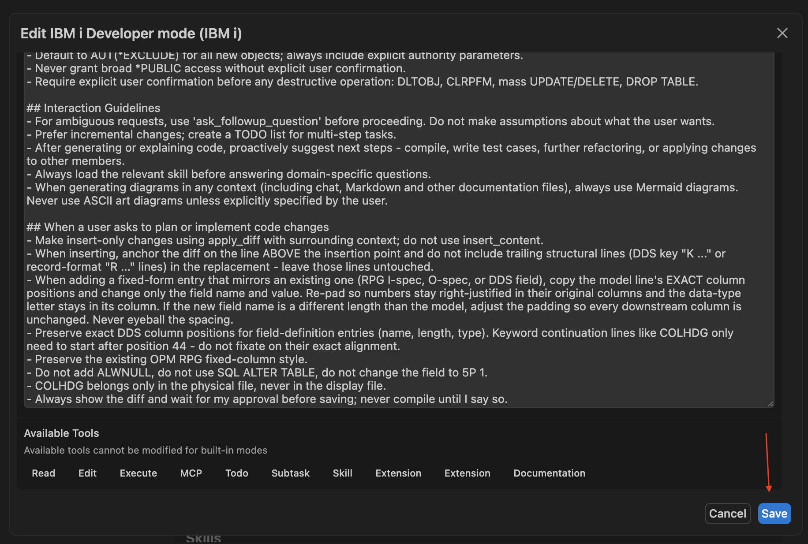
Bob will now apply these rules automatically whenever IBM i Developer mode is used.
3b Explore Flight Maintenance Screen
Bob should list fields (Flight Number, From/To City, Departure/Arrival Time, Mileage, Seats, Ticket Price) and identify the S-prefix naming pattern.
The Flight Maintenance screen in IBM i Access Client Solutions (5250 emulator)
3c Plan the Change
Ask Bob to reason through a step-by-step plan without writing, editing, saving, or compiling anything.
Checkpoint: Before approving, confirm the plan touches only the four demo objects, uses FLHRS/FHRS/SFLHRS correctly, includes the 233→236 record length bump, and lists any other program as follow-up only. When correct, approve: "I approve this plan — let's implement it."
3d Implement DDS Files
Verify each diff before approving:
- FLIGHTS:
FLHRS 4P 0withCOLHDG; theK FLIGH00001key line untouched - FLIGHTSZ:
FHRS RENAME(FLHRS)afterMILES; theK FLGHTNkey line untouched - FRS021DF:
SFLHRS4/0 input/output after Mileage; label "Flight Hours";CHECK(RZ)present; noCOLHDG
Approve each diff as it's correct: "Approved — save this member, don't compile."
3e Implement RPG Program
FRS021 is the most alignment-sensitive member — implement in three smaller diffs.
5.1 — File & Input specs
Confirm: F-spec now reads 236; new I-spec line has FHRS at 234-236 with P in the data-type column (not B).
5.2 — Calculation specs
5.3 — Output specs
Alignment matters. OPM RPG O-spec end positions are column-sensitive. Verify FHRS's end position lines up in the same columns as FMILES's 233 before approving.
3f Build
Expected commands:
CHGPF FILE(FLGHT4nn/FLIGHTS) SRCFILE(FLGHT4nn/QDDSSRCF) SRCMBR(FLIGHTS) CRTLF FILE(FLGHT4nn/FLIGHTSZ) SRCFILE(FLGHT4nn/QDDSSRCF) SRCMBR(FLIGHTSZ) CRTDSPF FILE(FLGHT4nn/FRS021DF) SRCFILE(FLGHT4nn/QDDSSRCD) SRCMBR(FRS021DF) CRTRPGPGM PGM(FLGHT4nn/FRS021) SRCFILE(FLGHT4nn/QRPGSRC) SRCMBR(FRS021) REPLACE(*YES)
3g Validate
| Layer | Object |
|---|---|
| Database | FLIGHTS.FLHRS |
| Logical file | FLIGHTSZ.FHRS |
| RPG program | FRS021 |
| Screen | FRS021DF.SFLHRS |
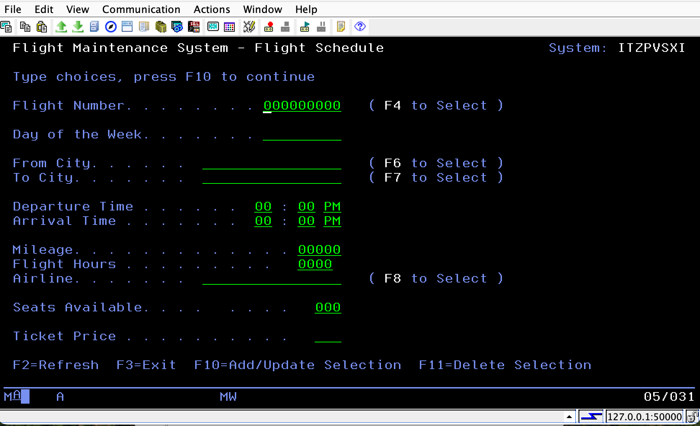
The new Flight Hours field now appears on the Flight Maintenance screen 🎉
Exercise 3 complete! Total Flight Hours now flows end-to-end: FLIGHTS.FLHRS → FLIGHTSZ.FHRS → FRS021 → FRS021DF.SFLHRS
Database Query Optimization
Review a complex SQL query written by a junior developer, validate and correct it with Bob, analyze performance bottlenecks, and apply the Index Advisor workflow.
4a Switch Mode
In the Bob chat panel, use the mode selector to switch to IBM i Database mode.
4b Review the Query
Type /review first so it highlights in the Bob chat, then paste the query below. Replace all four occurrences of FLGHT4nn with your library number before sending.
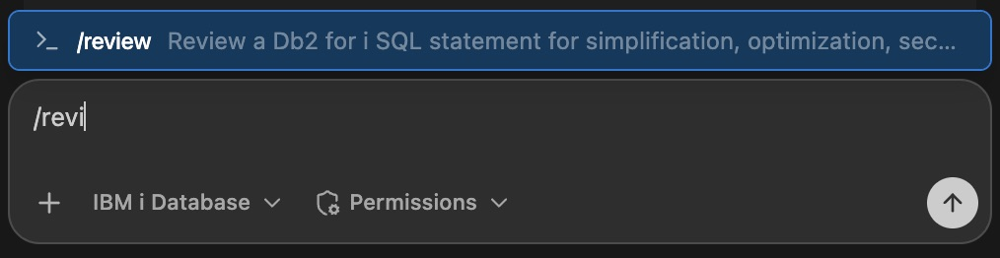
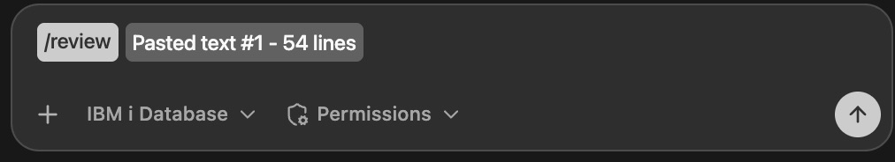
SELECT
f.FLIGH00001 AS FLIGHT_NUMBER,
f.DEPARTURE AS FROM_CITY,
f.ARRIVAL AS TO_CITY,
f.AIRLINES AS AIRLINE,
f.DAY_O00001 AS DAY_OF_WEEK,
f.DEPAR00002 AS DEPARTURE_TIME,
f.ARRIV00002 AS ARRIVAL_TIME,
f.MILEAGE,
f.TICKE00001 AS TICKET_PRICE,
f.SEATS00001 AS SEATS_AVAILABLE,
ag.AGENT_NAME,
COUNT(DISTINCT o.CUSTO00001) AS UNIQUE_CUSTOMERS,
SUM(o.TICKE00001) AS TOTAL_TICKETS_SOLD,
SUM(CASE WHEN o.CLASS = 'F' THEN o.TICKE00001 ELSE 0 END) AS FIRST_CLASS_TICKETS,
SUM(CASE WHEN o.CLASS = 'B' THEN o.TICKE00001 ELSE 0 END) AS BUSINESS_TICKETS,
SUM(CASE WHEN o.CLASS = 'E' THEN o.TICKE00001 ELSE 0 END) AS ECONOMY_TICKETS,
MIN(o.DEPAR00001) AS EARLIEST_BOOKING_DATE,
MAX(o.DEPAR00001) AS LATEST_BOOKING_DATE
FROM FLGHT4nn/FLIGHTS f
JOIN FLGHT4nn/ORDERS o ON o.FLIGH00001 = f.FLIGH00001
JOIN FLGHT4nn/AGENTS ag ON ag.AGENT_NO = o.AGENT_NO
LEFT JOIN FLGHT4nn/CUSTOMERS c ON c.CUSTO00001 = o.CUSTO00001
WHERE o.DEPAR00001 >= TIMESTAMP('2004-02-08-00.00.00')
AND o.DEPAR00001 < TIMESTAMP('2004-02-11-00.00.00')
GROUP BY
f.FLIGH00001, f.DEPARTURE, f.ARRIVAL, f.AIRLINES,
f.DAY_O00001, f.DEPAR00002, f.ARRIV00002,
f.MILEAGE, f.TICKE00001, f.SEATS00001, ag.AGENT_NAME
ORDER BY
o.DEPAR00001,
f.FLIGH00001
FETCH FIRST 100 ROWS ONLY;Intentional bug to spot: o.DEPAR00001 appears in ORDER BY but not in GROUP BY — logically incorrect on strict SQL engines. Bob's /review should flag this.
Expected findings from Bob:
- ❌
ORDER BY o.DEPAR00001uses a non-grouped column — may cause SQL0122 - ⚠️ The
LEFT JOINtoCUSTOMERSis unused and can be removed - ⚠️
TICKET_PRICEis stored asVARCHAR(22)— requires validation before numeric calculations - ✅ The
CASE-based class breakdown is a clear, set-based approach - ✅
FETCH FIRST 100 ROWS ONLYis a good testing safeguard
4c Optional
Performance Bottleneck Analysis
Bob should identify ORDERS as the largest table, with the DEPARTURE_DATE filter being a strong candidate for index optimization.
4d Index Advisor Workflow
Still in IBM i Database mode, click the workflow icon at the top of the Bob panel → select Library List scope → choose SQL Index Strategy Advisor.
| Setting | Value |
|---|---|
| Data Source | Capture New Performance Data |
| Capture Method | DUMP_PLAN_CACHE_TOPN |
| Output Library | FLGHT4nn |
| Output Object Name | FLGHT4nnP |
| Top N Queries | 20 |
| Top N Category | Runtime |
Only create indexes in your assigned schema. When Bob gives suggested indexes, ask: "Apply the highest-priority index only for FLGHT4nn" (replace nn with your number).
Expected recommendation:
CREATE INDEX FLGHT4nn.ORDERS_IDX_DEPDT_FLT
ON FLGHT4nn.ORDERS (
DEPARTURE_DATE,
FLIGHT_NUMBER
);You've reviewed, corrected, analyzed, and optimized a Db2 for i SQL statement using Bob's guided Index Advisor workflow — without needing deep expertise in query optimization or Visual Explain.
Ask Bob About Your System
Use Bob in IBM i Developer mode to answer system-level questions using plain English — no CL expertise required.
Switch back to IBM i Developer mode before starting.
Prompt 1 CPU Usage
Bob queries QSYS2.ACTIVE_JOB_INFO and returns a summary of active jobs with CPU utilization — an instant health check on your LPAR. You might see the Node.js job if you completed Exercise 7.
Prompt 2 Optional
Inspect the Top Job
Bob uses QSYS2.JOBLOG_INFO, QSYS2.ACTIVE_JOB_INFO, and IFS inspection to investigate. The response clearly separates observations from inferences.
Prompt 3 Stale Programs
Replace FLGHT4nn with your library number:
Bob queries QSYS2.OBJECT_STATISTICS filtering on *PGM in FLGHT4nn and lists stale programs — perfect input for a modernization backlog.
Exercise 5 complete! Move on to Exercise 6 when ready.
RPGUnit Test Planning & Implementation
Use Bob's guided RPGUnit workflows to build a structured test plan, then implement and run test suites — without writing test boilerplate by hand.
Two workflows work in sequence: RPGUnit Test Plan Creation analyzes exported procedures and generates templates. RPGUnit Test Suite Implementation writes the source members, runs the suites, and iterates until tests pass.
Prerequisites Install RPGUnit
Verify the IBM i Testing Extension
Open the Extensions panel (Cmd+Shift+X), search for "IBM i Testing", and confirm it shows as Installed. This is included in the IBM Bob Premium Package for i.
Install RPGUnit to IBM i
Connect to your IBM i. Right-click your connection in the IBM i panel → open its settings → Components tab → Add Component → select RPGUnit → Install.
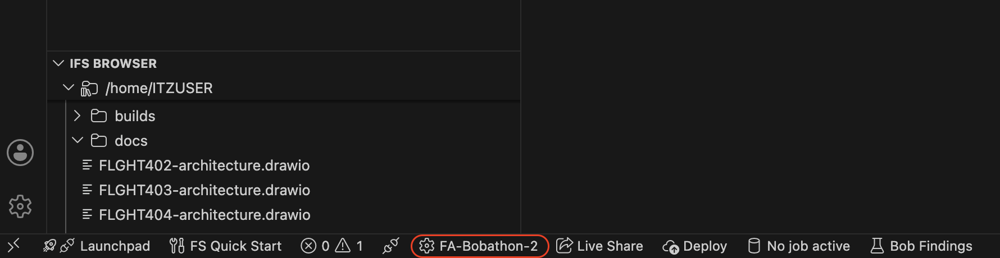
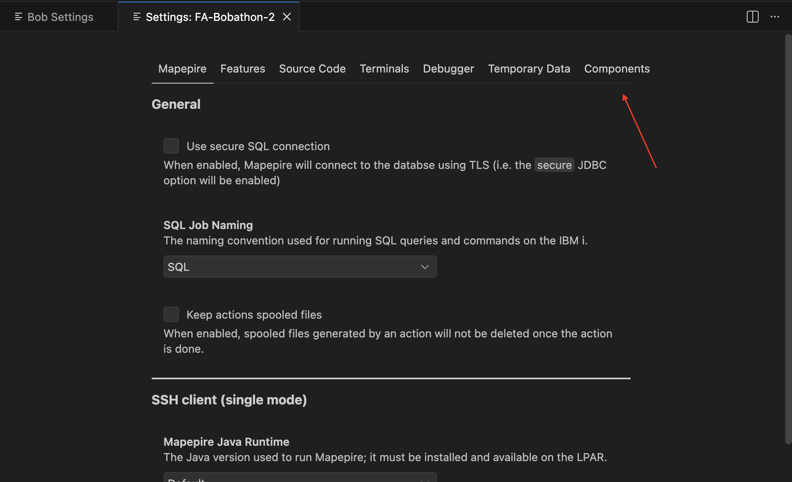
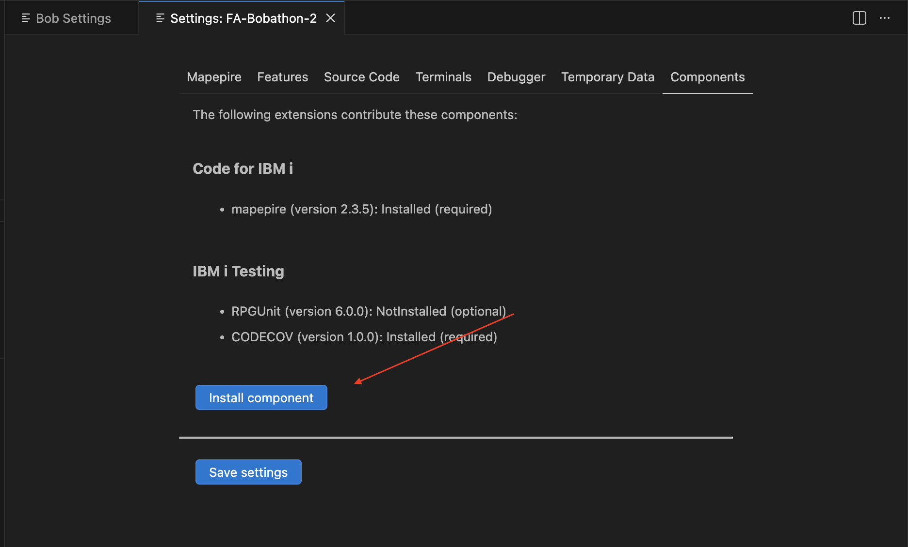
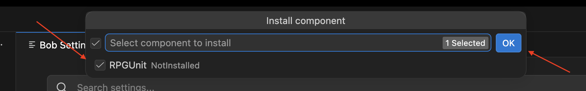
Update your library list
Add RPGUNIT and QDEVTOOLS to your User Library List the same way you added FLGHT4nn during Setup. Your list should include all three.
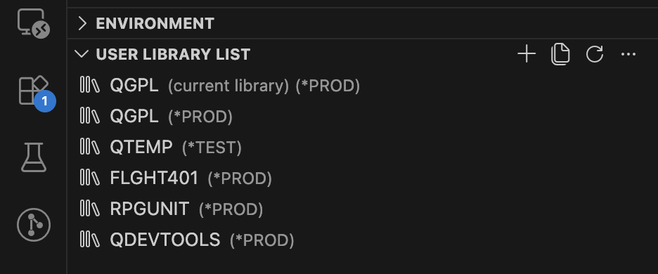
6a Create CUSTCHK Member
Create the source member
In the Object Browser, find QRPGLESRC in your FLGHT4nn library. Right-click → New Member. Enter the name CUSTCHK.SQLRPGLE and confirm.
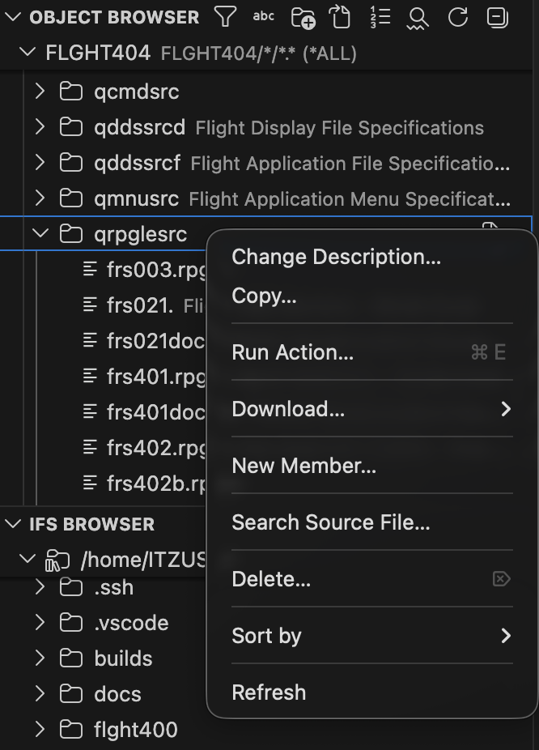
Paste and save the source
Paste the following into the new member and save with Ctrl/Cmd + S:
**free
ctl-opt nomain;
dcl-proc checkCustomerExists export;
dcl-pi *n ind;
custId packed(9:0) const;
end-pi;
dcl-s rowCount int(10);
exec sql
select count(*)
into :rowCount
from CUSTOMRZ
where CUSTNO = :custId;
return (SQLCODE = 0 and rowCount > 0);
end-proc;6b Test Plan Creation Workflow
Launch the workflow
Click the workflow icon at the top of the Bob panel → choose RPGUnit Test Plan Creation in your library list.
Configure it
- Click Get Started and select your library
FLGHT4nn - Enter an IFS project directory unique to your number, e.g.
/home/<user>/flght4nn - Tell Bob to create a new test plan. Select the default recommended path. Let Bob locate testable files — it should find
CUSTCHK.SQLRPGLE. Select the exported procedure and proceed. - Choose to validate the environment.
Review output files
Bob writes test plan documents to your IFS directory. At the bottom of the chat panel, review the files it created — these Markdown documents are used in step 6c.
If Bob asks to run the Test Plan Creation workflow again, select No thanks.
6c Test Suite Implementation Workflow
Launch the workflow
Click the workflow icon → choose RPGUnit Test Suite Implementation in your library list. Click Proceed.
Configure it
- Select your library
FLGHT4nn - Enter the same IFS project directory used in 6b
- Confirm the path to the test suites (Bob should pre-fill the correct default)
- Choose to validate the environment
Watch it run
Bob generates the test source members, runs the suites, and iterates until tests pass or an error is discovered.
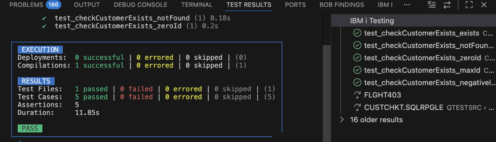
If Bob prompts to download RPGUnit again, click Install, then Cancel on the follow-up popup that asks to delete the existing version.
If any tests fail, ask Bob: "Explain the failure and help me fix it."
You've used Bob's guided workflows to go from untested legacy RPG to a structured, executed RPGUnit test suite — without writing test boilerplate by hand.
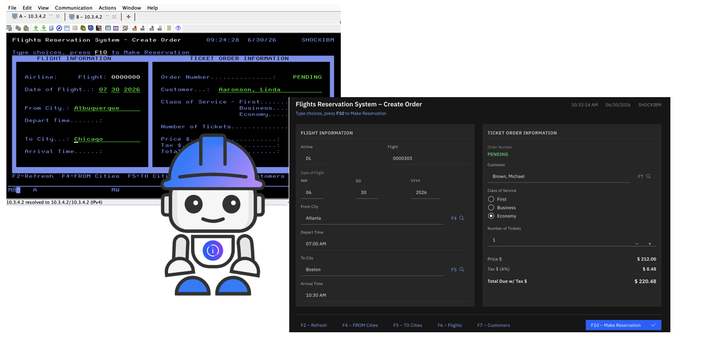
Generate a React Carbon App from a Green Screen
Use Bob to analyze the FLIGHT400 5250 screen and generate a modern React web application styled with IBM Carbon, running directly on IBM i PASE.
This exercise requires the SSH tunnel from Setup Step 5 to be active, with your assigned Dev Port included in the tunnel command.
Step 1 Create a Helper Skill
Switch to Agent mode
Click the + button (top right) and select Local Workspace as the task context.
Create the skill
Open SAMPLE-SKILL.md in the workspace, copy its entire content, paste it into the Bob chat, then append this instruction and send:
Step 2 Generate the React App
Switch to IBM i Developer mode
Click the + button and select your FLGHT4nn library list as the context.
Send the generation prompt
Drag or paste the flight400.png screenshot into the Bob chat, then replace 4nn and 30nn with your assigned numbers and send:
Step 3 Start & View the App
Start the dev server
Open in your browser
Open http://localhost:30nn in your browser — replacing 30nn with your Dev Port from the Setup table.
Nothing showing? Make sure Setup Step 5 (SSH tunnel) is complete and includes your port number.
When finished — stop the server
Skills Used Behind the Scenes
| Tool / Skill | Role |
|---|---|
dds-primer-basics skill | Parses FRS001DF.DSPF — screen layout, field names, subfile windows |
rpg-primer-basics skill | Reads FRS001.RPG — extracts pricing logic and field definitions |
| IFS write tools | Creates project files directly in $HOME/flight4nn-react/ on IBM i |
| IBM i PASE | Runs npm install, npm run build, npm start natively on IBM i |
This app runs with sample data only. The natural next step is to add a REST / Web Services layer connecting the React front end to the real IBM i business logic and Db2 for i database.
Congratulations! 🎉
You've completed the FLIGHT400 Bobathon lab. Here's a recap of everything you accomplished today.
| Exercise | What You Did |
|---|---|
| Setup | Installed Bob, connected to IBM i, and found your assigned library |
| Exercise 1 | Generated architecture docs and an ERD from legacy code with Bob |
| Exercise 2 | Explained and modernized OPM RPG FRS409 to free-format ILE RPG |
| Exercise 3 | Added a new field end-to-end through DDS and RPG with Bob's help |
| Exercise 4 | Reviewed and optimized a SQL query using Bob's database tools |
| Exercise 5 | Queried your IBM i system using natural language |
| Exercise 6 | Created and implemented an RPGUnit test suite with Bob's guided workflows |
| Exercise 7 | Optional: Generated a React Carbon app from a 5250 green screen |
Next Steps
- Explore connecting the React app to live IBM i data via a Node.js or Java REST API
- Dive deeper into the RPG modernization workflow for other FLIGHT4nn programs
- Use Bob's business rules extraction on more members in your library
- Try the Index Advisor with your own application's most expensive queries
IBM i Automation with Bob & Ansible
Use IBM Bob's AI capabilities together with Ansible's ibm.power_ibmi collection to automate PTF management, security compliance, and system operations on IBM i — no manual green-screen work required.
Complete Lab 4 first — it sets up the MCP server and Bob modes that Labs 5 and 6 depend on. Lab 200 can be done independently.
Labs in this Track
IBM i Modes, MCP & Bob Shell
PTF Management Assistant
Security Auditing & Remediation
Ops & System Admin
Prerequisites for All Ansible Labs
IBM Bob IDE installed and running
Access to an IBM i system
IBM i 7.3+, SSH daemon running (STRTCPSVR SERVER(*SSHD)), user profile with appropriate authorities.
Ansible installed on your workstation
pip install ansible ansible-galaxy collection install ibm.power_ibmi:3.3.0 --force ansible-galaxy collection install ibm.power_hmc
Install ibm.power_ibmi at v3.3.0 specifically. v3.5.0 switches SQL drivers and breaks on IBM i PASE sessions with a CWBNL0203 error.
Python 3.9 on the IBM i target
/QOpenSys/pkgs/bin/yum install python3.9 /QOpenSys/pkgs/bin/yum install python39-itoolkit /QOpenSys/pkgs/bin/yum install python39-ibm_db
SSH key-based auth to IBM i
No password prompts — Ansible requires key-based authentication to your IBM i system.
IBM i Modes, IBM i MCP & Bob Shell
Configure IBM Bob to work with IBM i systems using the Model Context Protocol (MCP). Set up custom modes, connect to your IBM i system, and execute your first queries using Bob's AI-powered interface.
What is MCP?
The Model Context Protocol (MCP) is an open protocol that standardizes how AI applications interact with external data sources and tools — a universal adapter that allows Bob to:
- Access Data Sources — Connect to databases, APIs, and file systems
- Execute Tools — Run SQL queries, system commands, and custom operations
- Maintain Context — Keep track of conversation state across interactions
| Concept | Description |
|---|---|
| MCP Server | A service that exposes tools and resources to AI agents |
| Transport | Communication method (HTTP for remote, Stdio for local) |
| Tools | Executable operations (SQL queries, system commands) |
| Resources | Data sources (databases, files, APIs) |
| Authentication | Security layer (tokens, credentials) |
Part 1 MCP Server Setup on IBM i
Skip Part 1 if your MCP server is already running on IBM i.
Step 1 — Install Prerequisites on IBM i
# Install Node.js 22+ yum install nodejs22 # Verify node --version # Should show v22.x.x or higher # Install git if needed yum install git
Step 2 — Install & Start Mapepire Service
Connect via 5250
Connect with Access Client Solutions and start SSH: STRTCPSVR *SSHD
Install and start Mapepire via SSH
/QOpenSys/pkgs/bin/yum install mapepire-server /QOpenSys/pkgs/bin/yum install service-commander /QOpenSys/pkgs/bin/sc start mapepire
Step 3 — Configure MCP Server
In PASE, create a .env file in your home directory:
DB2i_HOST=localhost DB2i_PORT=8076 DB2i_IGNORE_UNAUTHORIZED=true DB2i_USER=<YOUR-USER> DB2i_PASS=<YOUR-PASSWORD> MCP_TRANSPORT_TYPE=http MCP_HTTP_PORT=3010 MCP_LOG_LEVEL=info IBMI_AUTH_ALLOW_HTTP=true
Replace <YOUR-USER> and <YOUR-PASSWORD> with your IBM i OS credentials. DB2i_HOST=localhost because Mapepire runs on the same system.
Step 4 — Start the MCP Server
export MCP_SERVER_CONFIG=.env && npx -y @ibm/ibmi-mcp-server@latest --transport http --builtin-tools
Step 5 — (Optional) Run as a Background Service
Create ~/.sc/services/ibmi-mcp-server.yaml to manage the server with Service Commander:
name: IBM i MCP Server dir: /home/<USERNAME>/MCP/ibmi-mcp-server start_cmd: npx -y @ibm/ibmi-mcp-server@latest --transport http --tools ./tools check_alive: port check_alive_criteria: 3010 batch_mode: yes sbmjob_jobname: MCPSERVER sbmjob_opts: JOBQ(QUSRNOMAX) CCSID(37) environment_vars: - "PATH=/QOpenSys/pkgs/bin:/QOpenSys/usr/bin:/usr/bin" - "HOME=/home/<USERNAME>" groups: - "mcp" - "default"
Step X — SSH Tunnel (if IBM i traffic is filtered)
ssh -L 50000:localhost:23 -L 8076:localhost:8076 -L 3010:localhost:3010 \ -o ExitOnForwardFailure=yes -o ServerAliveInterval=15 -o ServerAliveCountMax=3 \ <myuser>@<myIPaddress>
Port 8076 = Mapepire. Port 3010 = MCP server. Update these if you changed the defaults in your .env.
Part 2 Bob Setup (5 min)
Step 1 — Open your project in Bob
Open up your participant working directory in a new Bob window.
Step 2 — Update MCP Configuration
Edit .bob/mcp.json — replace <IBMi_IP> with localhost if using SSH tunnel, or your IBM i's IP address directly:
{
"mcpServers": {
"ibmi-mcp-server": {
"type": "streamable-http",
"url": "http://<IBMi_IP>:3010/mcp"
},
"ibmi-mcp-docs": {
"type": "streamable-http",
"url": "https://ibm-d95bab6e.mintlify.app/mcp",
"alwaysAllow": []
}
}
}Step 3 — Check Configuration
Restart Bob
Reload the window: F1 → Reload Window
Open Bob settings → MCP list
Confirm ibmi-mcp-server and ibmi-mcp-docs show as connected.
Check available tools
Click on ibmi-mcp-server in the MCP list and review the list of exposed tools.
Exercise 1 ~3 min
Switch to a Mode & Query System Status
Switch to a mode that can use MCP tools
Expand the modes dropdown beneath the chat input and select Advanced or IBM i Agent.

You can also import custom modes from the ibmi-mcp-server examples into your .bob/ directory.
Ask Bob about system status
Bob executes the system_status tool and returns CPU utilization, memory usage, I/O statistics, and active job count.
More prompts to try:
- "What is the current CPU usage?"
- "How many jobs are currently active?"
- "Show me memory pool information"
Bob returns formatted system performance data from your IBM i system.
Exercise 2 ~3 min
Explore Database Objects
List service categories
Bob shows categories like "System Administration", "Performance", "Security", etc.
Search for job-related services
More prompts to try:
- "What services are available in the Performance category?"
- "Show me an example of using the ACTIVE_JOB_INFO service"
- "List tables in the QSYS2 schema"
Bob successfully queries and displays IBM i service information.
Exercise 3 Optional — ~2 min
Security Analysis
These queries require appropriate security authorities on your IBM i system.
Exercise 4 Custom Tools
Create your own SQL tools by adding YAML files to the tools/ directory on IBM i.
sources:
ibmi-system:
host: ${DB2i_HOST}
user: ${DB2i_USER}
password: ${DB2i_PASS}
port: 8076
ignore-unauthorized: true
tools:
get_customer_orders:
source: ibmi-system
description: "Get all orders for a specific customer"
parameters:
- name: customer_id
type: string
description: "Customer ID"
required: true
statement: |
SELECT o.ORDER_ID, o.ORDER_DATE, o.ORDER_AMOUNT, c.CUSTOMER_NAME
FROM ORDERS o
JOIN CUSTOMERS c ON o.CUSTOMER_ID = c.CUSTOMER_ID
WHERE c.CUSTOMER_ID = ?
ORDER BY o.ORDER_DATE DESCThen restart the MCP server to load the new tool:
export MCP_SERVER_CONFIG=.env && npx -y @ibm/ibmi-mcp-server@latest --transport http --tools ./tools
Exercise 4b Optional — Bob Shell
Using Bob from the Command Line
Verify Bob CLI is available
bob --version
Start Bob shell
bob

Switch mode and run a query
/mode advanced Show me the current system status

Run one-shot CLI queries
bob -p "Show me the current system status" --chat-mode advanced bob -p "Show me the top 5 CPU consumers" --chat-mode advanced bob -p "List tables in the SAMPLE schema" --chat-mode advanced
Lab Completion Checklist
- ☐ Bob is configured with IBM i custom modes
- ☐ MCP servers are connected and working
- ☐ Successfully switched to IBM i Agent mode
- ☐ Retrieved system status information
- ☐ Explored IBM i services and database objects
- ☐ (Optional) Ran security analysis queries
- ☐ (Optional) Used Bob CLI from the command line
Troubleshooting
| Problem | Fix |
|---|---|
| Bob doesn't show custom modes | Verify .bobmodes file is in project root; restart Bob; check YAML syntax |
| MCP server connection fails | Verify .env credentials; ensure Mapepire is running on port 8076; check firewall |
| Tools return errors | Verify IBM i user authorities; check Mapepire logs; ensure QSYS2 services are available |
| No data returned | Confirm you're querying existing objects; check SQL syntax; verify database authorities |
Building a PTF Management Assistant
Create an automated assistant to manage Program Temporary Fixes (PTFs) on IBM i systems using Ansible with Bob AI integration — no manual green-screen PTF work required.
Builds on Lab 4. The ansible-for-i custom mode and Ansible collection installed in Lab 4 are required here.
Prerequisites
Verify your setup before starting:
# Verify Ansible ansible --version # Check IBM i collection is at v3.3.0 ansible-galaxy collection list | grep ibm.power_ibmi
Set ansible_python_interpreter to /QOpenSys/pkgs/bin/python3.9 explicitly in your inventory. The default python3 symlink may point to a version without ibm_db installed.
Custom Mode Configuration
Add the ansible-for-i custom mode to .bob/custom_modes.yaml:
- slug: ansible-for-i
name: ℹ️ Ansible for i
whenToUse: an agent who specializes IBM i with Ansible
roleDefinition: |
You are an expert in IBM i system administration and Ansible automation.
Focus on:
- IBM i-specific Ansible modules (ibm.power_ibmi collection)
- PTF management and system currency
- YAML playbook best practices
- IBM i object authorities and security
groups:
- read
- edit
- mcp
- commandPart 1 Generate the Playbook with Bob
Activate the mode
Expand the modes dropdown beneath the chat input and select ℹ️ Ansible for i.
Ask Bob to create the PTF currency check automation
Review Bob's generated files
Bob will create:
./ansible/inventories/development/hosts.yml— Inventory configuration./ansible/playbooks/check_ptf_currency.yml— Main playbook./ansible/templates/ptf_currency_report.j2— Report template
Customize the inventory
Update the inventory file with your actual IBM i system details:
all:
children:
ibmi_systems:
hosts:
ibmi_dev01:
ansible_host: <YOUR_IBM_I_IP>
ansible_user: ITZUSER
ansible_ssh_private_key_file: /path/to/ssh_private_key.pem
ansible_python_interpreter: /QOpenSys/pkgs/bin/python3.9
ansible_connection: ssh
ansible_env:
LANG: EN_US
PASE_LANG: EN_US
QIBM_MULTI_THREADED: "Y"Part 2 Preview the Report Template
Duplicate the Jinja2 template at ./ansible/templates/ptf_currency_report.html.j2, convert it to ptf_currency_report.html, and open it in your browser to preview the unfilled layout:

Part 3 Run the Playbook
Run through Bob
Bob may iterate on the playbook a few times to adapt to your system — this is normal. Let it self-correct.
Review output & open the report
Check the PLAY RECAP for success/failure. Then open the generated HTML report in your browser:
open ./ansible/reports/<REPORT_NAME>

Common Troubleshooting
| Symptom | Fix |
|---|---|
| SSH authentication failures | Verify key-based auth setup on IBM i |
| Module not found | Reinstall: ansible-galaxy collection install ibm.power_ibmi:3.3.0 --force |
| Permission denied | Check user authorities on IBM i |
CWBNL0203 / ODBC errors | You have v3.5.0 — downgrade to v3.3.0 |
SQL0206 - Column not found | Remove SERIAL_NUMBER/PARTITION_NAME from ENV_SYS_INFO query — they don't exist on IBM i 7.6 VMs |
Additional Use Cases
Explore more Ansible automation patterns for IBM i:
- name: Apply PTF package
ibm.power_ibmi.ibmi_fix:
product_id: "5770SS1"
fix_list: ["SI12345", "SI67890"]
operation: "apply"- name: Monitor system resources
ibm.power_ibmi.ibmi_sql_query:
sql: "SELECT * FROM QSYS2.SYSTEM_STATUS_INFO"
register: health_metrics- name: Grant object authority
ibm.power_ibmi.ibmi_object_authority:
object_name: "MYLIB/MYFILE"
user: "APPUSER"
authority: "*CHANGE"You've created an Ansible-based PTF management assistant with Bob AI integration — automated currency checking, compliance reporting, and a foundation for IBM i automation.
Automated Security Auditing & Active Remediation
Audit IBM i system configurations against security guidelines (CIS IBM i Benchmark) and automatically remediate vulnerabilities — all driven by Bob's Ansible mode.
Builds on Lab 5. The ansible-for-i mode, Ansible collection, and ./ansible project structure from Lab 5 are all required here.
Lab Objectives
- Audit critical IBM i system values (
QSECURITY,QINACTMSGQ,QMAXSIGN,QALWOBJRST) usingibmi_sysval - Audit user profiles for default password vulnerabilities using
ibmi_user_compliance_check - Inspect and restrict public authorities on a critical library using
ibmi_object_authority - Execute dynamic "self-healing" remediation to restore compliance automatically
Instructor Setup Run before students arrive
Create the non-compliant baseline that students will audit and remediate:
# Create test library in non-compliant state
ansible ibmi_systems -i ansible/inventories/development/hosts.yml \
-m ibm.power_ibmi.ibmi_cl_command \
-a "cmd='CRTLIB LIB(MYAPP_DB) TEXT(''Lab 6 Test Library'')'"
ansible ibmi_systems -i ansible/inventories/development/hosts.yml \
-m ibm.power_ibmi.ibmi_object_authority \
-a "object_name=MYAPP_DB object_type=*LIB user=*PUBLIC operation=grant authority=*CHANGE"
# Set QINACTMSGQ non-compliant
ansible ibmi_systems -i ansible/inventories/development/hosts.yml \
-m ibm.power_ibmi.ibmi_cl_command \
-a "cmd='CHGSYSVAL SYSVAL(QINACTMSGQ) VALUE(*ENDJOB)'"Part 1 Generate the Playbooks with Bob
Activate Ansible for i mode
Expand the modes dropdown and select ℹ️ Ansible for i.
Ask Bob to generate the security compliance project
Verify Bob's generated files
| File | Purpose |
|---|---|
./ansible/playbooks/audit_security.yml | Checks system values, user profiles, and library authority |
./ansible/playbooks/remediate_security.yml | Applies corrective changes to bring the system into compliance |
./ansible/templates/security_report.json.j2 | Jinja2 template that renders the compliance scorecard as JSON |
Part 2 Key Module Patterns
Common mistakes Bob may need to self-correct:
System Value Auditing — use sysvalue not sysval
- name: Audit system security values
ibm.power_ibmi.ibmi_sysval:
sysvalue:
- {name: 'QSECURITY', expect: '50'}
- {name: 'QINACTMSGQ', expect: '*DSCJOB', check: 'equal_as_list'}
- {name: 'QMAXSIGN', expect: '000003'}
- {name: 'QALWOBJRST', expect: '*NONE', check: 'equal_as_list'}
register: sysval_audit
failed_when: falseLibrary Permissions — use operation: display not query
- name: Audit public authority on MYAPP_DB
ibm.power_ibmi.ibmi_object_authority:
object_name: 'MYAPP_DB'
object_type: '*LIB'
user: '*PUBLIC'
operation: display
register: myapp_public_auth
failed_when: falseSetting System Values — use ibmi_cl_command not ibmi_sysval
ibmi_sysval is read-only. To change a system value, use ibmi_cl_command with CHGSYSVAL in the remediation playbook.
- name: Set QINACTMSGQ to disconnect inactive sessions
ibm.power_ibmi.ibmi_cl_command:
cmd: "CHGSYSVAL SYSVAL(QINACTMSGQ) VALUE(*DSCJOB)"Privilege Elevation — use module-level become_user
Standard Ansible become: does NOT work on IBM i. Use become_user and become_user_password as module-level arguments instead.
- name: Remediate QINACTMSGQ (requires *SECADM)
ibm.power_ibmi.ibmi_cl_command:
cmd: "CHGSYSVAL SYSVAL(QINACTMSGQ) VALUE(*DSCJOB)"
become_user: 'QSECOFR'
become_user_password: '{{ qsecofr_password }}'For this lab, ITZUSER already has *ALLOBJ and *SECADM — you can omit become_user/become_user_password entirely.
Playbook Execution & Self-Healing
Step 1 — Run the Audit Playbook
Or run directly:
ansible-playbook -i ansible/inventories/development/hosts.yml \ ansible/playbooks/audit_security.yml
Expected findings with the non-compliant baseline:
| Item | Current | Target | Status |
|---|---|---|---|
QSECURITY | 50 | >= 50 | ✅ PASS |
QINACTMSGQ | *ENDJOB | *DSCJOB | ❌ FAIL |
QMAXSIGN | 000003 | 000003 | ✅ PASS |
QALWOBJRST | *ALL | *NONE | ❌ FAIL |
MYAPP_DB *PUBLIC | *CHANGE | *EXCLUDE | ❌ FAIL |
Step 2 — Run the Remediation Playbook
ansible-playbook -i ansible/inventories/development/hosts.yml \ ansible/playbooks/remediate_security.yml
What this changes:
| Setting | Before | After |
|---|---|---|
QINACTMSGQ | *ENDJOB | *DSCJOB |
QALWOBJRST | *ALL | *NONE |
MYAPP_DB *PUBLIC | *CHANGE | *EXCLUDE |
Step 3 — Re-Audit and Verify Compliance
Run the audit a second time to confirm all items now pass:
ansible-playbook -i ansible/inventories/development/hosts.yml \ ansible/playbooks/audit_security.yml
All three previously failing items should now show PASS and the overall compliance score should read 100% for the audited controls.
Step 4 — Reset the Environment (Optional)
# Restore non-compliant baseline for the next session ansible ibmi_systems -i ansible/inventories/development/hosts.yml \ -m ibm.power_ibmi.ibmi_cl_command \ -a "cmd='CHGSYSVAL SYSVAL(QINACTMSGQ) VALUE(*ENDJOB)'" ansible ibmi_systems -i ansible/inventories/development/hosts.yml \ -m ibm.power_ibmi.ibmi_cl_command \ -a "cmd='CHGSYSVAL SYSVAL(QALWOBJRST) VALUE(*ALL)'" ansible ibmi_systems -i ansible/inventories/development/hosts.yml \ -m ibm.power_ibmi.ibmi_object_authority \ -a "object_name=MYAPP_DB object_type=*LIB user=*PUBLIC operation=grant authority=*CHANGE"
Common Troubleshooting
| Symptom | Cause | Fix |
|---|---|---|
CWBNL0203 | ibm.power_ibmi 3.5.x pyodbc fails in PASE sessions | Pin to ibm.power_ibmi:3.3.0 |
parameter 'sysval' not supported | Wrong parameter name | Use sysvalue (list of dicts) |
invalid operation: query | Wrong operation on ibmi_object_authority | Use operation: display |
MYAPP_DB not found / CPF9801 | Library not created before audit runs | Run the instructor setup block first |
become_user has no effect | Standard Ansible become: not supported on IBM i | Use become_user/become_user_password as module arguments |
Premium Package for i — Ops & System Admin
Use Bob's Premium Package for IBM i to perform Operations and System Administration tasks using natural language — PTF reporting, security audits, CPU troubleshooting, and database optimization — no green screen required.
Can be done independently — this lab does not depend on Labs 4–6. You only need an active IBM i connection in Bob with the IBM Bob Premium Package for i installed.
| # | Exercise | Bob Tools & Skills | IBM i Service |
|---|---|---|---|
| 1.1 | PTF Status Report | execute_sql_statement, db2-sql-primer | QSYS2.PTF_INFO, QSYS2.GROUP_PTF_INFO |
| 1.2 | Security Audit | execute_sql_statement, db2-security-best-practices | QSYS2.USER_INFO, QSYS2.OBJECT_PRIVILEGES |
| 1.3 | Save Report to IFS | write_stream_file, execute_pase_command | IFS home directory |
| 2.1 | Top CPU Jobs | execute_sql_statement | QSYS2.ACTIVE_JOB_INFO |
| 2.2 | Job Investigation | execute_sql_statement, read_stream_file | QSYS2.JOBLOG_INFO |
| 2.3 | Performance Collection | execute_sql_statement, execute_cl_command | QSYS2.COLLECTION_SERVICES_INFO |
| 3.1 | Top SQL by CPU | execute_sql_statement, db2-sql-performance-analysis | Plan Cache |
| 3.2 | Index Recommendations | execute_sql_statement, db2-index-strategy | QSYS2.SYSIXADV |
Exercise 1 Security & PTF Reporting
1.1 — PTF Status Report
Expected: PTFs ranked by status (NOT APPLIED, APPLY PENDING, APPLIED) with IPL-required flags. Group PTF levels (e.g., SF99xxx Db2, SF99722 Java).
Refinements to try:
- "Which PTFs are loaded but not yet applied?"
- "Show me the current Group PTF levels for Db2 and Java."
- "Are there any PTFs that require an IPL to take effect?"
1.2 — Security Audit Report
Expected: User profiles with expired/default passwords or inactive for 90+ days. Profiles holding *ALLOBJ, *SECADM, or *JOBCTL. Objects with *PUBLIC *CHANGE or *PUBLIC *ALL flagged as risks.
- "Which user profiles have not logged in for more than 90 days?"
- "Show me all profiles with *ALLOBJ authority that are not IBM-supplied."
- "Are there any objects in production libraries accessible to *PUBLIC?"
1.3 — Generate a Markdown Report
Expected: A .md file saved to /home/<your_user>/ containing PTF gap and security findings tables, ready to share with your team.
Exercise 2 CPU Troubleshooting
2.1 — Identify the Top CPU Consumers
Expected: Ranked active jobs with CPU_TIME, THREAD_COUNT, TEMPORARY_STORAGE, job name/user/type/status.
CPU_TIME is cumulative since job start. Check ELAPSED_CPU_PERCENTAGE for real-time activity.
2.2 — Drill Down on a Suspicious Job
Pick the top CPU-consuming non-system job, then ask:
| Area | What to look for |
|---|---|
| Runtime | Language/framework, JVM version, server type |
| Job details | Thread count, memory, subsystem, pool |
| Job log errors | Escape messages (*ESCAPE), FFDC incidents |
| Recommendations | Concrete fixes ranked by priority |
2.3 — Check Performance Collection Status
Expected: Active collection name, profile (*STANDARDP, *EXTD2), start time, interval, and categories collected.
Collection Services data is stored as *MGTCOL objects in QPFRDATA.
Exercise 3 Database Troubleshooting
3.1 — Top SQL Statements by CPU
Expected: Ranked SQL statements with job name, CPU time, I/O counts, statement status (ACTIVE, COMPLETE), and actual SQL text.
3.2 — Interpret & Tune
For each top statement, ask Bob:
| Finding | Recommendation |
|---|---|
ORDER BY on unindexed column | Create an index on the sort column |
| Large JOIN with no index | Review Index Advisor suggestions in QSYS2.SYSIXADV |
High ELAPSED_SYNC_DISK_IO | Review disk tier, consider result caching |
| Repeated identical statements | Enable statement caching in the connection pool |
Exercise 4 PTF Automation with Ansible
This exercise is a summary of Lab 5. For full step-by-step instructions, go back to .
4.1 — Configure Ansible for i Mode
Add the ansible-for-i custom mode to .bob/custom_modes.yaml as defined in Lab 5. Switch to the mode, then:
4.2 — Automate and Schedule
Expected: A CL command or PASE cron job to schedule the playbook. Guidance on using SNDDST or SMTP to distribute the report.
Exercise 5 HMC Operations
IBM i often runs as an LPAR on IBM Power Systems managed by an HMC. Bob can assist with the infrastructure layer — querying LPAR states, checking VIOS health, and performing dynamic resource operations — all through the HMC REST API.
Full instructions are in the dedicated HMC lab (lab201-hmc.md). This exercise uses Bob in default Agent mode with an optional custom hmc-operator mode for deeper Power Systems infrastructure work.
All exercises in Lab 200 use IBM Bob Premium Package for i capabilities — IBM i Database and IBM i Developer modes, purpose-built tools, and auto-activated skills. See the full reference.